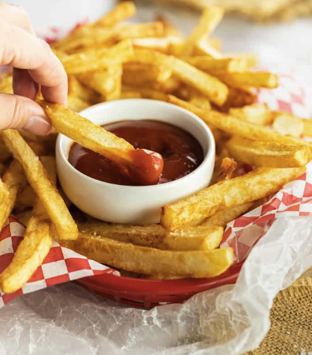

French Fries

Description
French fries are the perfect go to snack for all situations.
Ingredients
Step-By-Step
- Slice the potatoes 1/2 inch thick. (A French Fry Cutter makes this easier.)
- Soak them cold in water for at least an hour or overnight. (Longer = crispier fries)
- Rinse them twice with cold water and pat the completely dry.
- Heat oil to 300 degrees. Fry them in about 6 batches for 5-6 minutes. Don't overcrowd them by
placing too many in at a time, they won't be as crispy. Use a slotted spoon and place on a paper towel.
- Increase heat to 400 degrees. Fry in batches until golden brown, about 5 minutes.
- Place them on paper towels and sprinkle immediately with salt. Serve with ketchup!